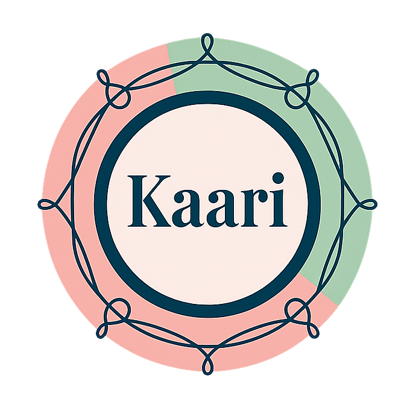

Dominant Stitch
Stitch not found. Try: running stitch, backstitch, french knot, chain stitch, etc.
Difficulty:
Type:
Try: running stitch, backstitch, french knot, chain stitch, blanket stitch, satin stitch, stem stitch, lazy daisy
Combination Size
3 stitches
4 stitches
5 stitches
6 stitches
Harmony Style
Similar - Same difficulty level
Progressive - Building complexity
Mixed - Varied difficulties
Complementary - Different stitch types
Texture Harmony - Similar visual texture
Function Based - Same purpose stitches
Traditional - Same cultural origins
Generate Combination
Generated Combination
Click stitches to lock/unlock • Locked stitches stay when regenerating
Combination generated successfully!
Custom-built by
Creatis Stack
, v.08.25